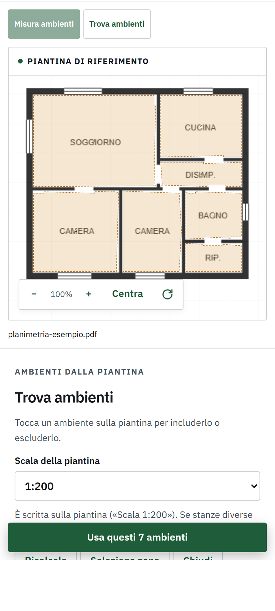
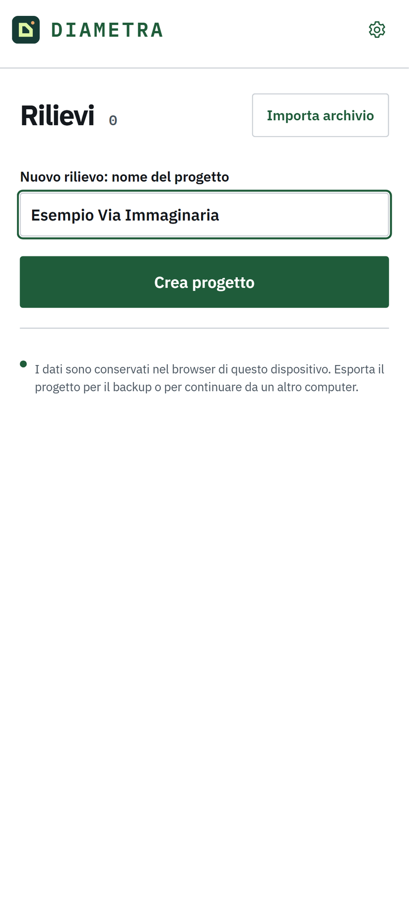
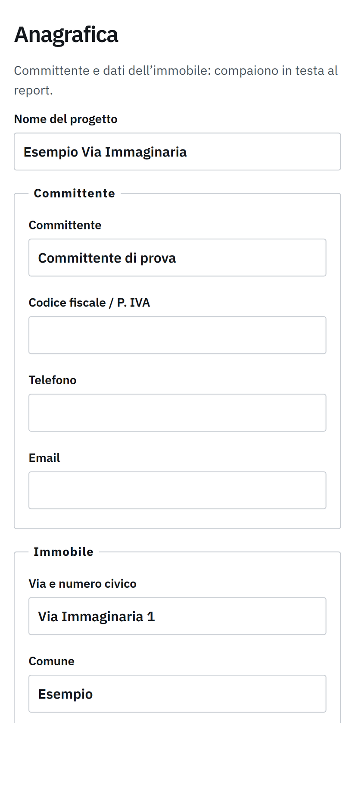
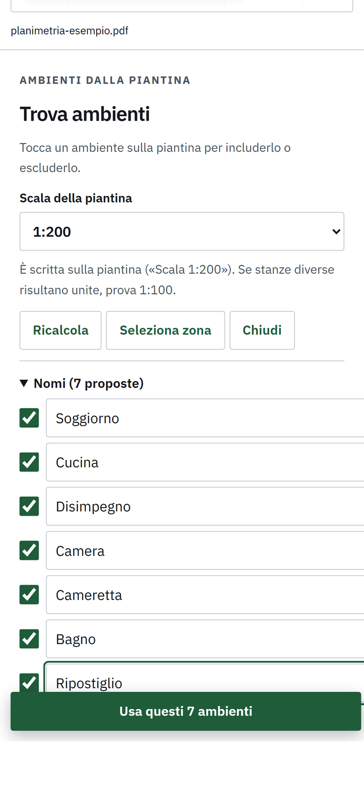
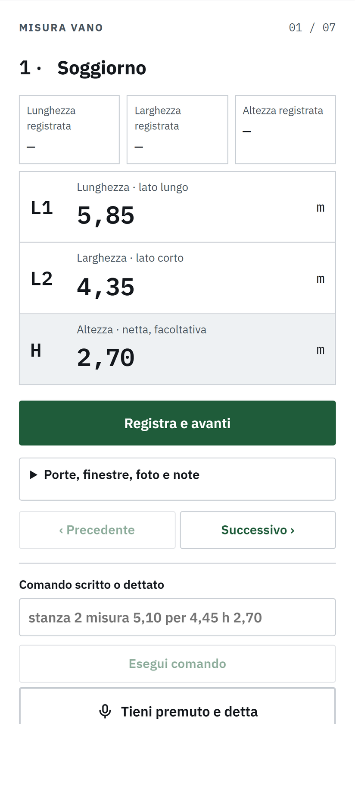
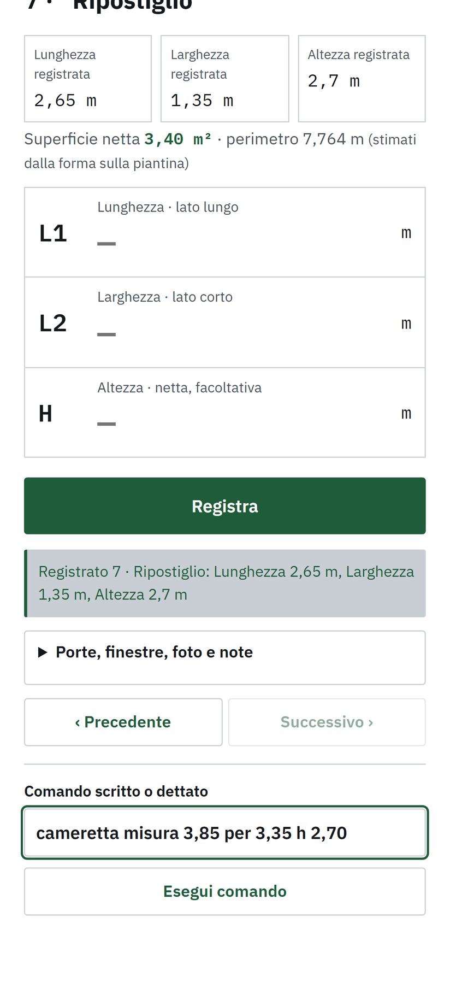
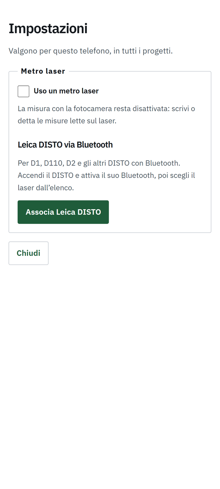
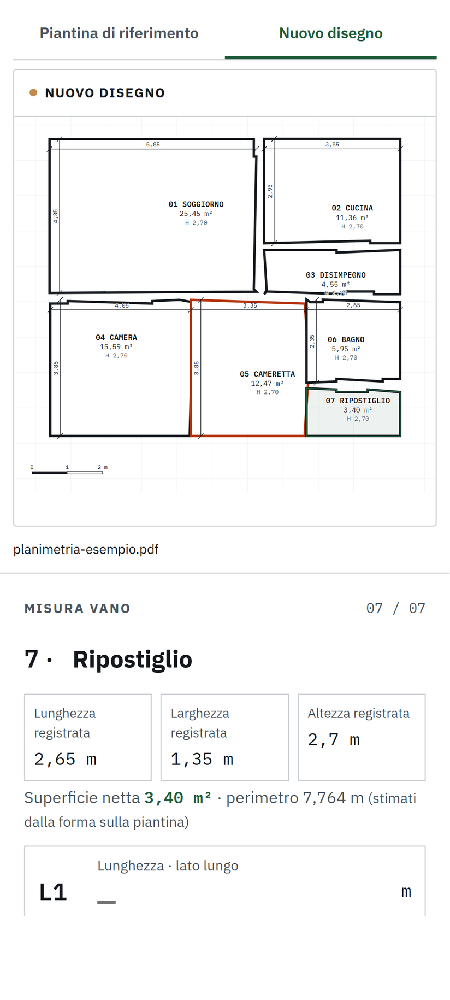
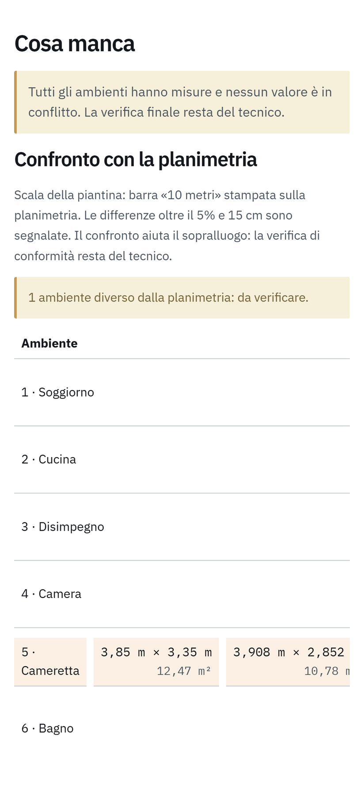
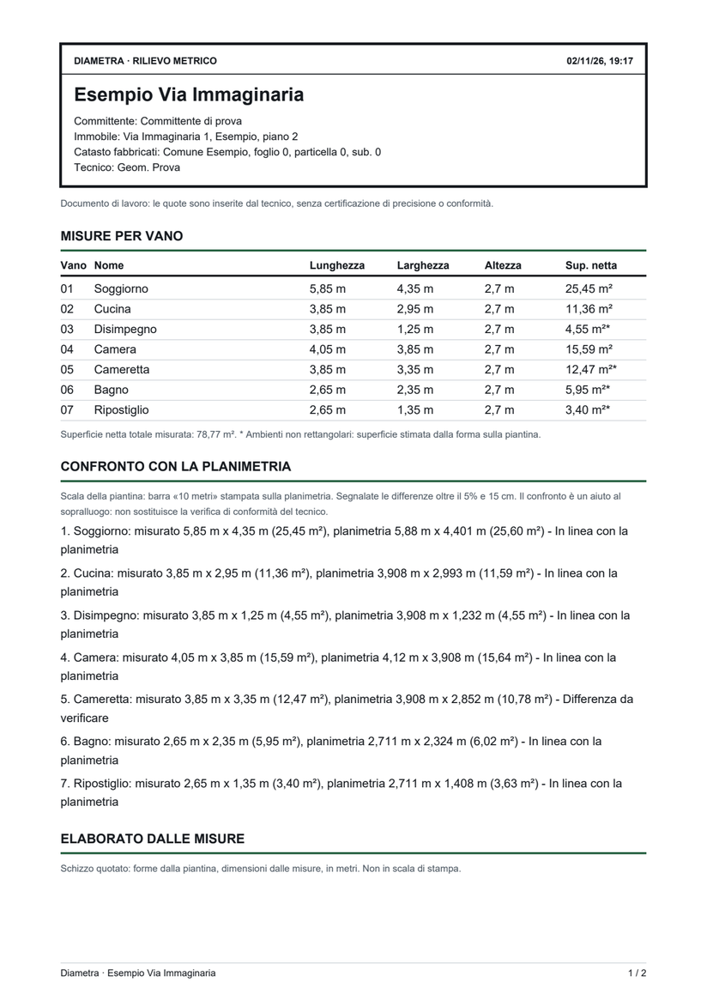

GUIDA · IL PRIMO RILIEVO
Un rilievo completo in dieci minuti.
Scarica la planimetria di esempio e seguila passo per passo: importi la piantina, misuri sette vani, vedi il disegno quotato e il confronto con la planimetria, esporti il report.

Prima di cominciare
Puoi usare l'app Android o la versione nel browser: i passi sono gli stessi. Sul telefono salva la planimetria di esempio nei download; dal computer basta scaricarla.
Crea il rilievo
Nella pagina Progetti scrivi il nome del progetto, per esempio Esempio Via Immaginaria, e tocca Crea progetto.
L'elenco mostra per ogni rilievo indirizzo, dati catastali, vani misurati, superficie netta e stato: NUOVO, IN CORSO o COMPLETATO.

Compila l'anagrafica
Apri la scheda Anagrafica e inserisci committente, indirizzo, comune, piano, foglio, particella, subalterno e tecnico. Per l'esempio usa i dati del cartiglio: Comune ESEMPIO, Via Immaginaria 1, Foglio 0, Particella 0, Subalterno 0.
Ogni campo si salva quando passi al successivo. Tutto è facoltativo: questi dati compaiono nel cartiglio del report PDF e nell'elenco dei rilievi.

Importa la planimetria
Torna su Raccogli, tocca Importa piantina e scegli planimetria-esempio.pdf. In pochi secondi Diametra propone il contorno di sette vani.
- La scala è 1:200, come sul cartiglio. L'app legge anche la barra blu «10 metri» sul margine, come nelle planimetrie del Catasto.
- Tocca un vano sulla piantina per escluderlo o rimetterlo.
- Su una planimetria vera, se due stanze risultano unite scegli 1:100 e tocca Ricalcola. Se manca una stanza, tocca due volte al suo centro.
- Due dita ingrandiscono la piantina; il pulsante con la freccia circolare la ruota di un quarto di giro.
Dai un nome ai vani
Apri Nomi (7 proposte) e scrivi i nomi in ordine: Soggiorno, Cucina, Disimpegno, Camera, Cameretta, Bagno, Ripostiglio. Il numero di ogni vano è scritto al centro del suo contorno.
Poi tocca Usa questi 7 vani. Se preferisci, i nomi si cambiano anche dopo, toccando il nome in cima alla scheda di misura.

Misura il primo vano
Si apre Misura vano sul Soggiorno. Scrivi L1 (lunghezza, il lato lungo), L2 (larghezza, il lato corto) e H (altezza netta). Il tasto Invio della tastiera passa al campo successivo.
Tocca Registra e avanti: la misura è salvata e si apre il vano seguente. Sopra i campi vedi le misure già registrate, la superficie netta e il perimetro.
Diagonale, se vuoi controllare la squadratura. Quando lunghezza e larghezza di un vano sono registrate compare il campo D (diagonale, da spigolo a spigolo, facoltativa). Se la diagonale misurata si discosta da quella di un vano in squadra più del doppio della tolleranza del progetto, Diametra avvisa: «Fuori squadra: diagonale misurata 6,55 m, attesa 6,50 m (differenza 5,3 cm)». L'avviso compare nella scheda del vano, nel nuovo disegno, in Revisiona e nel report PDF.
Altezza e tipo di soffitto. L'altezza è una misura richiesta: finché manca, la scheda del vano dice «Da rilevare: altezza» e il report la elenca tra le misure mancanti; il rilievo si salva comunque. Sopra l'altezza c'è il menù Soffitto: piano (il solito), inclinato a una falda, a due falde, oppure una volta (a botte, a crociera, a padiglione, a vela, a schifo, a stella, a cupola). Con un soffitto non piano compaiono due altezze, H1 e H2: minima e massima per le falde, imposta e chiave per le volte (per la volta a schifo la chiave è l'altezza della parte piana). Diametra calcola l'altezza media, stimata per le volte, e la usa nel disegno, nel report e nel DXF. Se cambi il tipo di soffitto dopo aver misurato l'altezza, le altezze di prima vengono escluse (restano nel registro, segnate come escluse) e vanno misurate di nuovo per il soffitto scelto: la scheda lo dice.
Lati, per un vano non rettangolare. Nel Nuovo disegno le pareti del vano selezionato hanno una lettera: a, b, c… Tocca una parete e nella scheda compare il campo Lato con la sua lettera: scrivi la misura e tocca Registra lato. Il lato diventa una quota nel disegno, nel DXF e nel report. Funziona sui vani trovati o ricalcati sulla piantina. Se gli angoli del vano sono retti, con tutti i lati (o quasi: ne può mancare uno per direzione) Diametra ricostruisce la forma vera e calcola superficie e perimetro dai lati, non più stimati: la scheda scrive «dai lati misurati» e non chiede lunghezza e larghezza. Se i lati non chiudono oltre la tolleranza del progetto compare l'avviso «Lati che non chiudono» con l'errore in centimetri: ricontrolla le misure.
Le misure dell'esempio:
| Vano | L1 | L2 | H |
|---|---|---|---|
| 01 Soggiorno | 5,85 | 4,35 | 2,70 |
| 02 Cucina | 3,85 | 2,95 | 2,70 |
| 03 Disimpegno | 3,85 | 1,25 | 2,70 |
| 04 Camera | 4,05 | 3,85 | 2,70 |
| 05 Cameretta | 3,85 | 3,35 | 2,70 |
| 06 Bagno | 2,65 | 2,35 | 2,70 |
| 07 Ripostiglio | 2,65 | 1,35 | 2,70 |
La larghezza della Cameretta è sbagliata di proposito: al passo 9 vedrai come Diametra la segnala.

Misura con un comando o a voce
Nel campo Comando scritto o dettato puoi registrare un vano qualsiasi in una riga, senza cercarlo nella lista:
cucina misura 3,85 per 2,95 h 2,70stanza 4 misura 4,05 per 3,85 h 2,70stanza 2 nome Cucina abitabileper rinominarediagonale 6,40(anchestanza 4 diagonale 6,40) per la diagonale di controllolato c 2,35(anchelato a 4,80 lato b 3,20) per i lati di un vano non rettangolare, con le lettere del nuovo disegno; a voce si dice «lato ci due e trentacinque»altezza minima 2,10ealtezza massima 3,40per un soffitto inclinato,imposta 2,80echiave 3,60per una volta: prima scegli il tipo di soffitto nel menùporta 80 per 210ofinestra 120 per 140, in centimetri o in metri: l'altezza è facoltativa. Aggiungia 45 dallo spigolose hai misurato la distanza dallo spigolo alla spalletta,muro 30per lo spessore del muro letto sulla spalletta e, per le finestre,davanzale 90per l'altezza del davanzale (es.finestra 120 per 140 davanzale 90 muro 30)aggiungi nota in questo ambiente ci sono delle infiltrazioni dal tetto: il testo si aggiunge alla nota del vano
Poi tocca Esegui comando. Per dettare, tieni premuto «Tieni premuto e detta» mentre parli e lascialo quando hai finito, come un vocale: il testo compare nel campo e lo controlli prima di eseguirlo. Per i decimali puoi dire «cinque e dieci» oppure «cinque virgola dieci»: diventano 5,10.
Nell'app Android la dettatura è immediata e ascolta solo numeri, parole delle misure e nomi dei vani; dopo «nota» ascolta invece qualsiasi parola. Nel browser è più lenta.
Il tasto nero Tieni premuto e detta è subito sotto i campi di misura: quando lo lasci, «Ho sentito…» compare lì sotto con il tasto Esegui.
Schizzo del vano apre un foglio a quadretti. Disegna il perimetro con il dito: appena lo chiudi diventa una forma con pareti dritte e angoli retti. Puoi anche partire da Rettangolo o Forma a L, trascinare gli angoli e tirare un lato per fare una rientranza; con Matita aggiungi porte e finestre. Alla fine scegli se lo schizzo va al posto del vano nel nuovo disegno o accanto: è in scala con le misure e lo sposti trascinandolo.
Dove sono porte e finestre. Nei vani ricalcati sulla piantina, dopo una porta o una finestra dettata si apre il nuovo disegno: tocca la parete dove si trova, vicino allo spigolo da cui hai misurato. Con il modulo scritto resti sul modulo, pronto per la prossima apertura, e la posizioni con Posiziona sulla sua riga. La distanza detta con il comando parte da quello spigolo, segnato da un pallino; senza distanza vale il punto toccato. Con Più tardi la posizioni dopo, con Posiziona o Sposta nell'elenco delle aperture, dove puoi anche scrivere la distanza dallo spigolo, lo spessore del Muro e il Davanzale delle finestre (campi facoltativi, anche nel modulo per aggiungere un'apertura). Lo spessore misurato su un'apertura posizionata vale per tutta la sua parete.
Sotto il vano, in Porte, finestre, foto e note, Foto apre la fotocamera e Allega aggiunge foto dalla galleria o documenti (PDF, Word, Excel, testo). La × su ciascuno lo rimuove.

Metro laser e fotocamera
Apri le Impostazioni con l'ingranaggio in alto a destra.
- Uso un metro laser: spegne la misura con la fotocamera, così non la usi per sbaglio. Le misure lette sul laser le scrivi o le detti.
- Associa Leica DISTO (D1, D110, D2 e gli altri DISTO con Bluetooth): da quel momento, quando premi il tasto di misura sul laser, il valore entra da solo nel campo riquadrato in verde.
- Senza laser, nell'app Android trovi Misura … con la fotocamera: punti l'inizio («Segna inizio»), poi la fine («Segna fine»), e con Usa il valore entra nel campo. Sbaglia di qualche centimetro: usala per un controllo, non al posto del metro.
- Misura al volo: il righello in alto, accanto all'ingranaggio, misura con la fotocamera da qualsiasi schermata, senza registrare nulla nel rilievo. Dopo «Segna fine» la misura resta fissata con una lettera (A, B, C…) e puoi prenderne subito un'altra nella stessa inquadratura, per esempio larghezza e altezza di una porta. «Scatta foto» chiude la misura e prepara l'immagine con le misure disegnate sopra e il nome del progetto aperto; nella finestra che segue scegli Salva in galleria o Condividi. Per uscire senza foto c'è «Fine senza foto». Utile per una porta o un mobile da controllare al volo.

Guarda il disegno quotato
Sopra la piantina tocca Nuovo disegno. Ogni vano misurato è disegnato con le quote che hai inserito, il nome, la superficie e l'altezza; i vani ancora da misurare sono tratteggiati. Tocca un vano per aprirne la misura.
La Cameretta ha il contorno rosso: le sue misure non tornano con la forma sulla planimetria.

Controlla il confronto con la planimetria
Apri la scheda Revisiona. Per ogni vano vedi le misure prese e quelle ricavate dalla planimetria in scala: Diametra segnala le differenze oltre il 5% e 15 cm.
La Cameretta è segnalata: sulla planimetria è larga circa 2,85 m, non 3,35. Correggila con il comando cameretta misura 3,85 per 2,85 e la segnalazione sparisce.
Il confronto aiuta a capire dove guardare meglio durante il sopralluogo: la verifica di conformità resta del tecnico.

Esporta report, DXF e backup
- Report PDF: cartiglio con i dati dell'anagrafica, tabella delle misure per vano, confronto con la planimetria e disegno quotato.
- DXF per CAD: il disegno in metri per AutoCAD, BricsCAD o LibreCAD, con un livello separato per i contorni della planimetria.
- Condividi / backup: un file con tutto il rilievo, foto e allegati compresi. Salvalo in una cartella di Drive o OneDrive condivisa, o mandalo a un collega: lo apre con Importa archivio, lo modifica e te lo rimanda. Quando importi un'altra versione dello stesso rilievo, Diametra ti propone prima di unirle: tiene le misure, le letture e le foto di entrambe; dove avete cambiato la stessa cosa (il nome di un vano, il contorno, il tipo di soffitto, lo spessore di un muro…) vince la versione salvata per ultima, e alla fine un riepilogo elenca cosa è stato aggiunto e ogni differenza decisa così, da controllare. Una cosa cancellata da uno dei due torna dalla versione dell'altro. In alternativa puoi aggiornare il tuo con il file ricevuto, se è più recente, o importarlo come copia separata. Se in studio usi Diametra PRO, salva sempre nella stessa cartella Diametra di OneDrive o Drive: da lì PRO lo importa con Importa da Diametra.
Sul telefono i file si aprono nel menu Condividi: puoi salvarli o mandarli per e-mail o WhatsApp.
I dati restano sul dispositivo. Disinstallare l'app o cancellare i dati del browser cancella i rilievi: fai sempre il backup di quelli che ti servono.

Se qualcosa non va
Due stanze unite
Scegli la scala 1:100 e tocca Ricalcola, oppure usa Seleziona zona per analizzare solo il disegno.
Manca una stanza
Tocca due volte al centro della stanza sulla piantina, o aggiungila con + nella lista dei vani.
La dettatura non capisce
Parla vicino al telefono e usa le parole delle misure. Un nome nuovo va scritto: la dettatura conosce solo i nomi dei vani già presenti.
Valore rifiutato
Le misure impossibili, come una larghezza di 30 m, vengono rifiutate: controlla il testo e correggilo.
Il DISTO non si collega
Accendilo vicino al telefono e attiva il suo Bluetooth: Diametra riprova da sola ogni pochi secondi. Il DISTO deve essere in metri.
Ho perso un rilievo
Se avevi fatto il backup, riaprilo con Importa archivio nella pagina Rilievi.